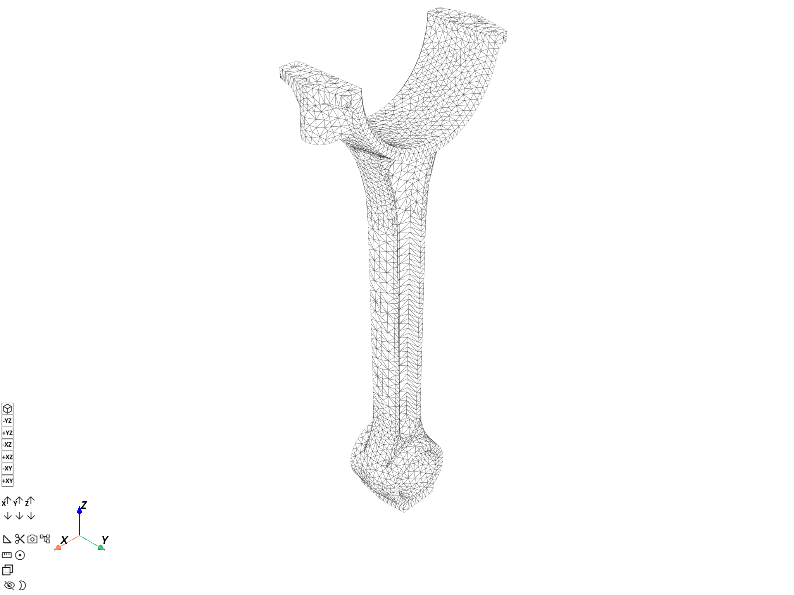
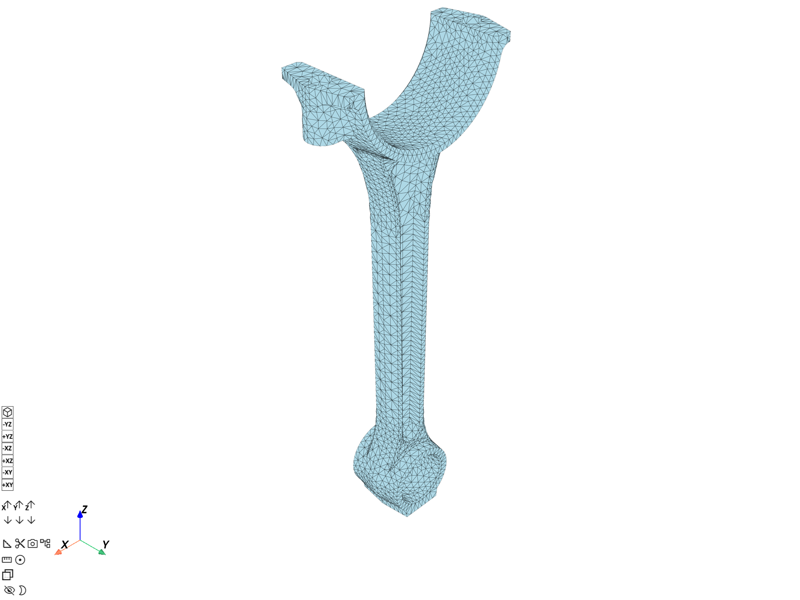
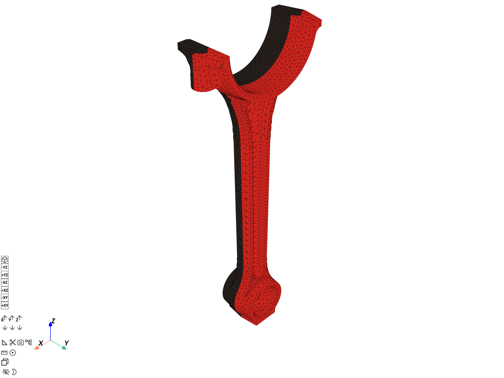

Note
Go to the end to download the full example code.
Plot a mesh#
This tutorial shows different commands for plotting a mesh without data.
A mesh is represented in DPF by a
MeshedRegion.
You can store multiple MeshedRegion objects in a DPF collection called
MeshesContainer.
You can obtain a MeshedRegion by creating your own from scratch or by getting it
from a result file. For more information, see the
Create a mesh from scratch and
Get a mesh from a result file tutorials.
PyDPF-Core has a variety of plotting methods for generating 3D plots with Python. These methods use VTK and leverage the PyVista library.
Load data to plot#
import ansys.dpf.core as dpf
from ansys.dpf.core import examples, operators as ops
# Download and get the path to an example result file
result_file_path_1 = examples.download_piston_rod()
# Create a model from the result file
model_1 = dpf.Model(data_sources=result_file_path_1)
Plot a model#
You can directly plot the overall mesh loaded by the model with
Model.plot().
Note
The DpfPlotter displays the mesh
with edges, lighting and axis widget enabled by default. You can pass additional
PyVista arguments to all plotting methods to change the default behavior (see options
for pyvista.plot()),
such as title, text, off_screen, screenshot, or window_size.
model_1.plot()

([], <pyvista.plotting.plotter.Plotter object at 0x00000223CACF3210>)
Plot a single mesh#
Get the mesh#
Get the MeshedRegion object
of the model.
meshed_region_1 = model_1.metadata.meshed_region
Plot the mesh using MeshedRegion.plot()#
Use the
MeshedRegion.plot()
method.
meshed_region_1.plot()

([], <pyvista.plotting.plotter.Plotter object at 0x00000223C6510A50>)
Plot the mesh using DpfPlotter#
To plot the mesh using
DpfPlotter:
Create an instance of
DpfPlotter.Add the
MeshedRegionto the scene usingadd_mesh().Render and show the figure using
show_figure().
plotter_1 = dpf.plotter.DpfPlotter()
plotter_1.add_mesh(meshed_region=meshed_region_1)
plotter_1.show_figure()

([], <pyvista.plotting.plotter.Plotter object at 0x00000223B517F650>)
You can also plot data contours on a mesh. For more information, see Plot contours.
Plot several meshes#
Build a collection of meshes#
There are different ways to obtain a
MeshesContainer.
Here, we use the
split_mesh operator
to split the mesh based on the material of each element.
This operator returns a MeshesContainer with meshes labeled according to the
split criterion. In our case, each mesh has a mat label.
For more information about how to get a split mesh, see the
Split a mesh and Extract a mesh in split parts
tutorials.
meshes = ops.mesh.split_mesh(mesh=meshed_region_1, property="mat").eval()
print(meshes)
DPF Meshes Container
with 2 mesh(es)
defined on labels: body mat
with:
- mesh 0 {mat: 1, body: 1, } with 17281 nodes and 9026 elements.
- mesh 1 {mat: 2, body: 2, } with 17610 nodes and 9209 elements.
Plot the meshes#
Use the
MeshesContainer.plot()
method. This plots all MeshedRegion objects in the MeshesContainer and colors
them based on the property used to split the mesh.
meshes.plot()

([], <pyvista.plotting.plotter.Plotter object at 0x00000223CBD7BE10>)
You can also plot data on a collection of meshes. For more information, see Plot contours.
Total running time of the script: (0 minutes 11.728 seconds)